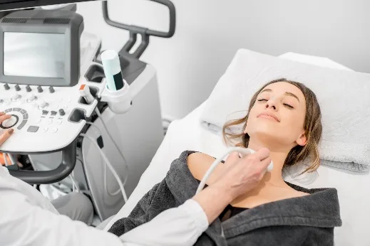

1 · Ecografía tiroidea
Estudio de imagen que usa ondas sonoras (ultrasonido), sin radiación, para observar la glándula tiroides y evaluar su tamaño, forma y estructura. Es fundamental para detectar nódulos, apoyar la obtención de muestras para estudio citopatológico, el seguimiento posoperatorio (detectar y confirmar recidivas cervicales precozmente), el diagnóstico y la monitorización de enfermedades benignas difusas y nodulares, y como apoyo a tratamientos mínimamente invasivos.
¿Para qué sirve?
Detectar nódulos tiroideos, identificar quistes, diagnosticar bocio, evaluar inflamación de la tiroides (tiroiditis) y guiar biopsias por aspiración (PAAF).
Resultados normales
La tiroides tiene tamaño, forma y posición normales.
Resultados anormales
Quistes (nódulos con líquido), bocio (agrandamiento), nódulos tiroideos, tiroiditis o cáncer tiroideo (estos dos requieren biopsia).
Antes
No requiere ayuno. Retirar collares o accesorios del cuello.
Durante
El paciente se acuesta con el cuello extendido, se aplica gel conductor y el transductor se desliza sobre el cuello.
Después
Puede continuar sus actividades normalmente. No necesita cuidados especiales.